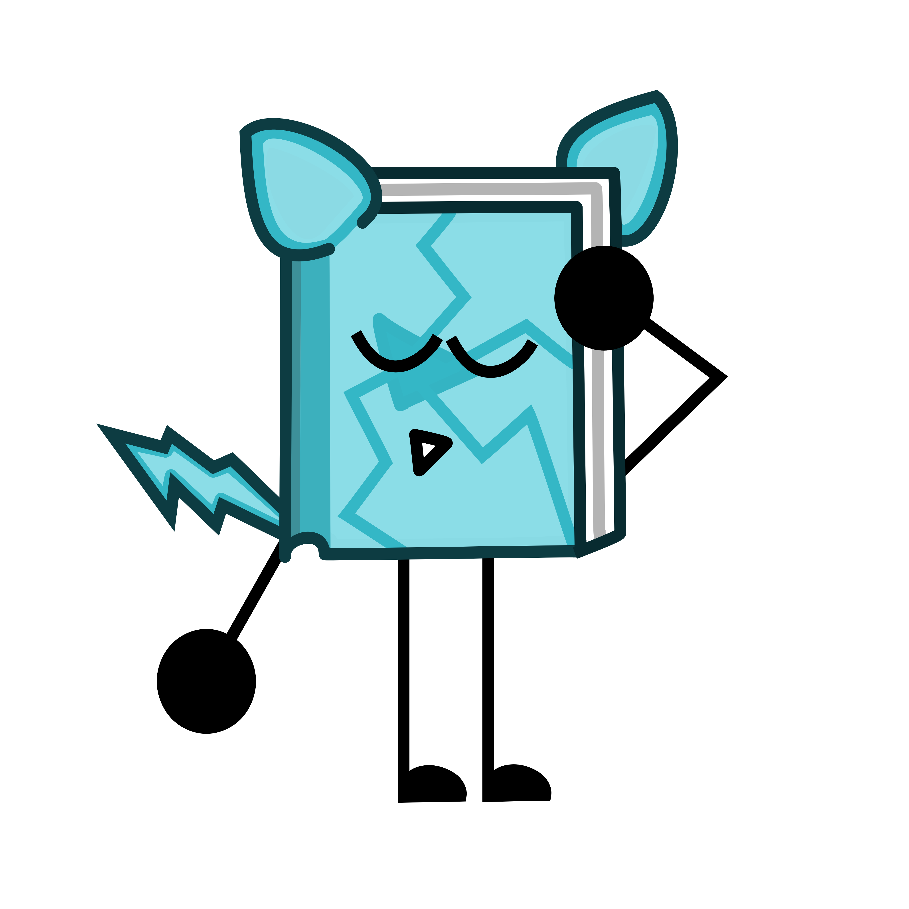

<!DOCTYPE html>
<html>
    <head>
        <meta charset="UTF-8">

        <title>Shatter - CE</title>

        <link rel="icon" type="image/png" href="/Data/ShatterPixel.png">

        <!-- Single theme link for swapping -->

        <link id="theme-link" rel="stylesheet" href="/css/light.css">

        <!--Metadata-->

        <meta property="og:title" content="Shatter - C.E.">
        <meta property="og:description" content="Cool's Encyclopedia is a passion project that serves as an OC Wiki for Cool and Cool's friends.">
        <meta property="og:type" content="website">
        <meta property="og:url" content="https://coolboy7d.github.io/shatter">
        <meta property="og:image" content="https://coolboy7d.github.io/Data/ravenpixel.png">

    </head>

    <body>
        <aside style=
        "width: 95%; 
        padding-left: 15px; 
        margin-left: 15px; 
        float: right;">

            <!--Top of page: Title-->

            <h1 style=
            "box-shadow: 5px 5px darkcyan;
            border: 4px solid darkcyan;
            border-radius: 40px;
            text-align: center;
            background-color:cyan;
            color:cornflowerblue;">
                Shatter
            </h1>
            
            <!--Side of Top of Page: Image-->

            <aside style=
            "all: inherit; 
            width: 50%; 
            padding-left: 15px; 
            margin-left: 15px; 
            float: right;">
            <br>

            <!--Image comment-->

            <small>
                Shatter as he appears in his reveal art.
            </small>
            <br>
            <br>
            <p style=
            "width: 490px;
            border-radius: 15px;
            text-align: center;
            background-color: beige;
            color:black;">

            <!--Name-->

            Shatter<br>

            <!--Pronouns-->

            He/Him<br>

            <!--Index-->

            #05<br> 
            <A href="./seb">(-- Back</A> <a href="./starlight">Next --)</a><br>

            <!--Defining trait-->

            Defining Trait: Inspection<br>

            <!--Notes-->

            <b>
                Notes:<br>
            </b>
            <small style="color:black;">
                Cool often forgets the gender of this one.<br>
            </small>
            </p>
            </aside>

            <!--Top of page: Quote-->

            <h5 style=
            "width: 40%; 
            border-top: 2px solid;
            border-bottom: 2px solid;
            border-radius: 7.5%;">

                Meet Shatter!<br>
            
                He/Him<br>
            
                Shatter is one of Raven's friends, and they usually talk online and
                play games with one another! Shatter is absolutely obsessed with game 
                design, and he really like critiquing games about how objectively good 
                they are.<br>
            
                <small>
                    <b>
                        - Cool, Shatter Reveal
                    </b>
                </small>
            </h5>

            <!--Top of page: Homepage Hyperlink-->

            <h3>
                <a href="./">
                    Back to home
                </a>
            </h3>

            <!--Top of page: Infoboxes (Page Warnings)-->

            <!--Missing Content-->

            <p style=
            "width: 40%;
            border-radius: 15px;
            font-size: large;
            background-color: crimson;color:black;
            text-align: center;">
                <b style="text-shadow: 1px 1px;">
                    <br>
                    This page is missing content.
                    <br>
                    <br>
                </b>
                <small style="color: black;">
                    Missing content: Table of contents, Lore, Gallery, etc.
                    <br>
                    <br>
                </small>
            </p>

            <!--Top of page: Table of Contents-->

            <p style=
            "border: 2px solid;
            box-shadow: none;
            font-size: x-large; 
            text-align: center;
            width: 40%;">
                <br>
                Table of Contents:
                <br>
                <br>
                <small> 
                    <a href="#desc">
                        Official Description
                    </a>
                    <br>
                    <br>
                </small>
            </p>
            <!--Middle of page: Official Description-->
            <p id="desc" style="font-size: x-large;
            border: none;
            box-shadow: none;">
                <b>
                    <br>
                    Official Description:
                </b>
            </p>
            <p style=
            "border-top: 2px solid;
            width:45%;
            border-radius: 100%;
            box-shadow:none;">
            </p>
            Shatter is a male book object who loves getting into the nitty gritty of design and structure. Of stories, that is. 
            But this can also apply to stuff like crime-scenes and such.<br>

            Shatter's <a href="./abilities"><abbr title="Abilities are perks of each and every single one of Cool's OCs">Ability</abbr></a>
            is that he can shatter many, many materials, like glass, or even metal by just placing his hand on the material for
            a couple seconds, then the material shatters into exactly 6 pieces. Though, using this 
            <a href="./abilities"><abbr title="Abilities are perks of each and every single one of Cool's OCs">Ability</abbr></a>
            can be really physically draining for him to use.<br>

            And although Shatter really likes digging deep into things like unsolved mysteries and crime-scenes, he doesn't actually
            have a job as a detective or anything. Instead, he works at a local grocery store as a cashier.

            <!--Keep these at very bottom-->

            <br><br><br>

            <!-- Dark mode toggle button -->

            <button id="dark-toggle" type="button" style="width: fit-content; height: fit-content;" onclick="toggleDarkMode()">
                Toggle Dark Mode
            </button>
        
            <br><br>
            <b>
                <small>
                    <small>
                        Update convention: major.minor.patch(stage of dev)<br>
                        Site Version: <div id="text-container">Loading...</div>
                    </small>
                </small>
            </b>
        
            <!-- Dark mode JS -->

            <script src="./darkmode.js"></script>

            <!-- Version number JS -->

            <script src="./script.js"></script>
        </aside>
    </body>
</html>